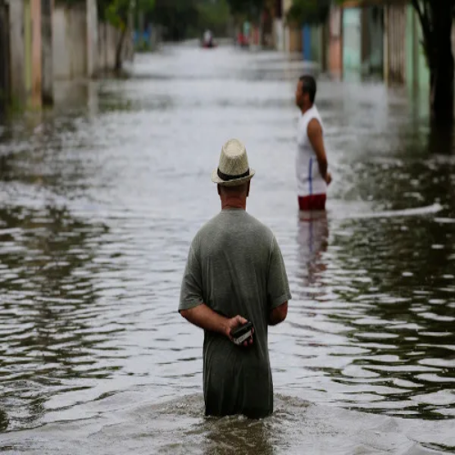

enchentes no Brasil
As enchentes no Brasil não são eventos novos 4 são tragédias anunciadas. De acordo com o Atlas Brasileiro de Desastres Naturais (CEMADEN/UFSC), entre 1991 e 2022, o país registrou mais de 21 mil inundações, afetando mais de 110 milhões de pessoas. Apenas em 2023, segundo dados do Ministério da Integração e do Desenvolvimento Regional, mais de 3,3 milhões de brasileiros foram impactados por eventos hidrológicos extremos, com ao menos 142 mortes associadas a enchentes e deslizamentos. Em 2024, o caso mais dramático ocorreu no Rio Grande do Sul, onde, até maio, mais de 170 pessoas morreram, 2,3 milhões foram afetadas, e cidades inteiras, como Canoas e Roca Sales, ficaram submersas por semanas
